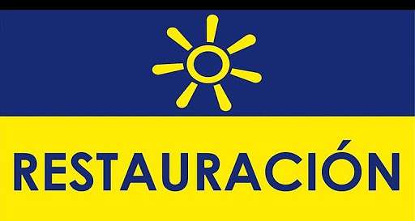

Resultados de las encuestas Bandera Candidato Primera encuesta Segunda encuesta Carlos Alvarado 21.63% 60,59%  Fabricio Alvarado 24.99% 39,41% Rodolfo Piza 15.99% Antonio Alvarez Desanti 18.63% Información Carlos Alvarado Fabricio Alvarado Rodolfo Piza Antonio Alvarez Donde Votar Resultado de encuestas